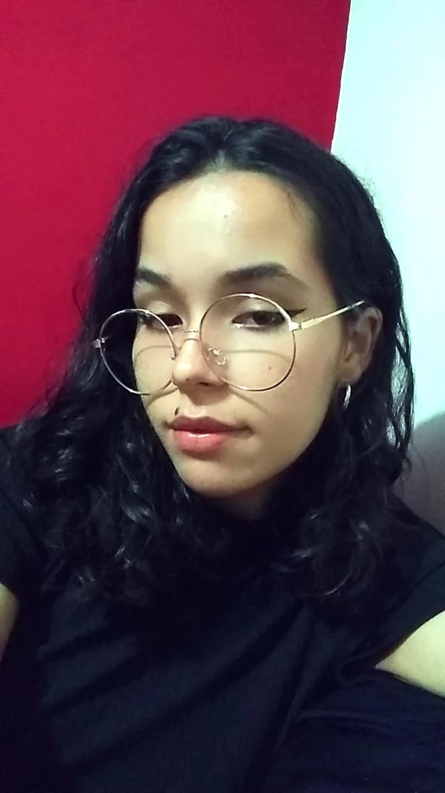
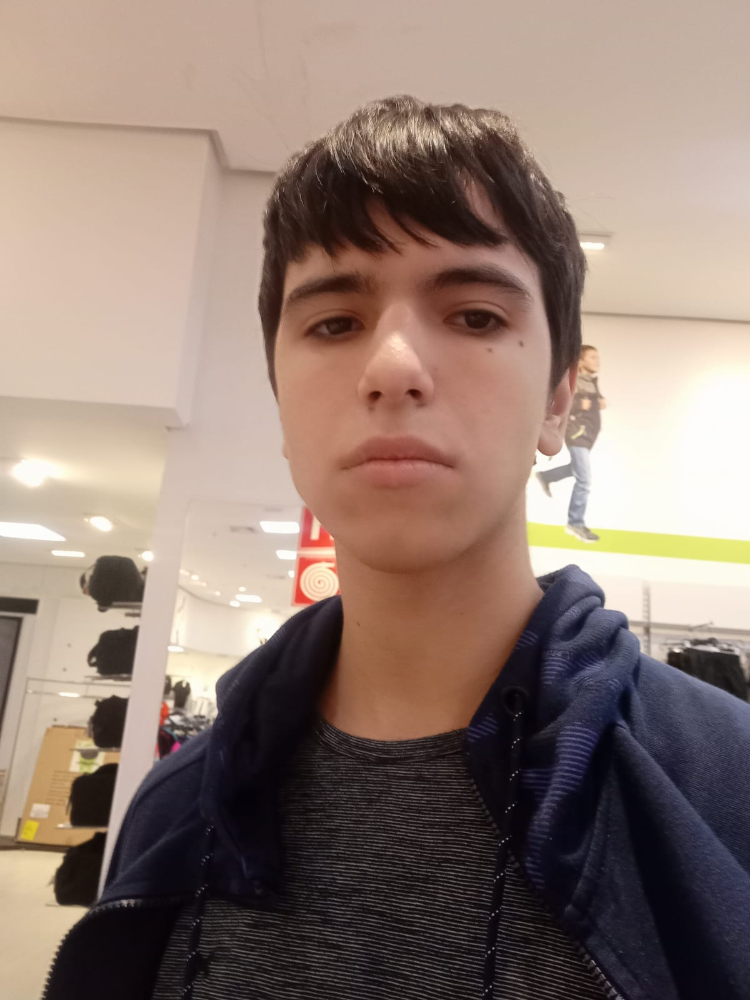

Sign Language
O que é "Língua de Sinais?"
As línguas de sinais são línguas visuais criadas em comunidades de pessoas surdas, ou derivadas de outras línguas de sinais. Nessa modalidade de língua, os sinais não são gestos, mas sim palavras articuladas principalmente pelas mãos e decodificadas por meio da visão. No fim, cabe a cada nação criar sua própria linguagem que envolva a língua de sinais.

História
O pioneiro no uso da língua de sinais na educação de surdos foi o clérigo francês Charles Michel de l’Epée, em meados do século XVIII. De l’Épée criou um método de ensino para pessoas surdas e um alfabeto manual, que deu o nome de Língua de Sinais Francesa. Também fundou o Instituto Nacional de Surdos-Mudos, em Paris, a primeira escola de surdos do mundo. No entanto, durante muitos anos, predominou na comunicação com as pessoas surdas o oralismo, defendido pelo cientista inglês Alexandre Graham Bell, o criador do aparelho telefônico. O prestígio de seu defensor no cenário científico da época era tão grande que, em 1880, num congresso de Milão, os participantes votaram pela proibição da língua de sinais como método de educação de surdos. Em decorrência disso, as línguas de sinais foram banidas dos ambientes educativos por mais de 100 anos. Apesar dessa proibição, o uso das línguas de sinais resistiu e muitos linguistas se dedicaram a estudá-las. O primeiro foi o estadunidense William Stokoe, que, na década de 1960, identificou nelas aspectos lexicais e sintáticos típicos de línguas genuínas.

Com origem na Língua de Sinais Francesa, a Libras é a sigla de Língua Brasileira de Sinais, adotada pela maioria das pessoas surdas em nosso país para a comunicação com outras pessoas, surdas ou ouvintes. A educação de surdos ganhou espaço no Brasil com a vinda do professor francês Eduard Huet, que ficou surdo aos 12 anos, a convite de D. Pedro II. Em 1857, na cidade do Rio de Janeiro, então capital do país, Huet fundou a Imperial Instituto de Surdos Mudos, primeira escola para crianças surdas, atual Instituto Nacional de Educação de Surdos (Ines). Em 2002, a Libras foi instituída, por meio da Lei n. 10.436, como a língua materna da comunidade surda no Brasil. Em 2005, o decreto n. 5.626 incluiu a Libras como disciplina curricular obrigatória nos cursos de formação de professores em nível médio e superior. O decreto prevê também o ensino da língua de sinais na educação básica e em universidades por docentes com licenciatura plena em letras.
Como: formas de estudar
Estudar Libras tem se tornado cada vez mais necessário no mundo que se cobra atitudes para a inclusão social, além de ser praticamente uma obrigação para quem pretende desenvolver sua comunicação com o mundo. Na tentativa de oferecer ajuda nos métodos, nós da Sign Language, a fim de introduzir a língua de um método simples e fácil para os novatos, disponibilizamos:


Abra uma oportunidade para a Libras!
Sobre nós
Criado por dois alunos do 2° ano do Ensino Médio do Instituto Federal do Triângulo Mineiro, Ana Paula Silva Marçal, Hugo Edmundo Canassa e João Victor Barbosa Marques, a Sign Language é um projeto dedicado para a conscientização de leitores e o incentivo a buscar o estudo das Linguas de Sinais para propor uma sociedade mais próxima, a fim de incluir indíviduos que possuem alguma falha auditiva ou comunicativa.

